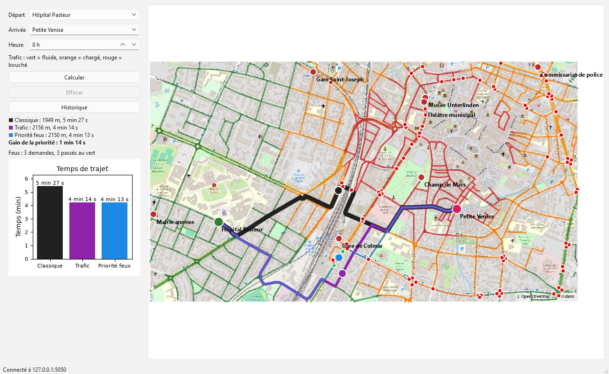
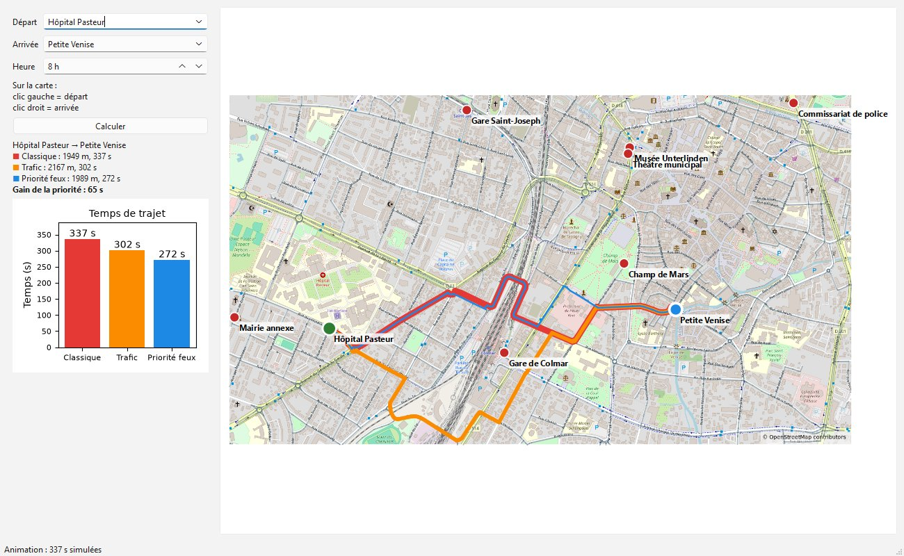

Le projet
Appli Python client / serveur qui compare 3 trajets pour un véhicule d'urgence (classique, trafic, priorité aux feux) sur le vrai réseau de rues de Colmar. Binôme avec Youssef Jabrane.
Ma partie : le client (PyQt6, carte, animation, réseau TCP et UDP) et le déploiement. Youssef : le serveur (ville, Dijkstra, feux, base de données).
| Compétence | AC |
|---|---|
| Programmer : Créer des outils et applications informatiques pour les R&T | AC23.03, AC23.02 |
| Connecter : Connecter les entreprises et les usagers | AC22.05 |
| Administrer : Administrer les réseaux et l'Internet | AC21.03, AC21.04, AC21.06 |
Programmer
Créer des outils et applications informatiques pour les R&T · Niveau 2
Développement du client de l'application, à partir de notre cahier des charges (rendu le 24/09/2026). Le sujet impose PyQt6, des sockets brutes (pas de MQTT, Twisted ni Scapy), des messages JSON, et une règle stricte : aucun thread ne modifie l'interface, tout passe par les signaux et slots de Qt.
client/fenetre.py: départ, arrivée (liste, adresse, GPS, clic), heure.client/carte.py: carte OpenStreetMap de Colmar, trafic, 86 feux, animation.client/reseau.py: client TCP (port 5050) et UDP V2I (port 5051), chacun dans unQThread.encoder/decoderdu protocole commun.
Utiliser un protocole réseau pour programmer une application client/serveur
Aucune bibliothèque réseau de haut niveau n'était autorisée : j'ai écrit moi-même, sur les sockets, la connexion, le découpage des messages et la gestion des erreurs. C'est exactement ce que demande l'AC.
- TCP est un flux d'octets sans frontières : un
recv()peut contenir un demi-message ou deux. D'où un protocole à trames (JSON +\n) et unDeframeurqui reconstitue les messages. - UDP garde les frontières : un datagramme = un message, sans
\n. Pas de connexion ni de garantie : un datagramme perdu ne doit rien bloquer. - Choix des deux : TCP pour le serveur (ville, trajets, historique : rien ne doit se perdre), UDP pour les demandes de feu vert du véhicule aux carrefours (courtes, fréquentes), comme un vrai système V2I de préemption des feux.
Développer une application à partir d'un cahier des charges donné, pour le Web ou les périphériques mobiles
Chaque ligne Must et Should du tableau MoSCoW est devenue une fonctionnalité visible du client (carte, 3 trajets, feux, priorité, graphique). Le 14/10, j'ai vérifié ligne par ligne ce qui était fait, partiel ou manquant. Limite : c'est une appli de bureau, pas Web ni mobile, donc je retiens surtout la partie « à partir d'un cahier des charges ».
Démarche
Petites étapes, chacune testée avant la suivante, dans l'ordre du rétroplanning : grille A1-F6 avec un chemin écrit à la main, puis connexion TCP, puis les 3 trajets, les feux, l'animation et enfin la priorité en UDP.
Le serveur de Youssef n'était pas prêt : j'ai écrit un faux serveur (outils/faux_serveur.py) qui répond à tous les messages du protocole. J'ai pu tester tout le client sans attendre, et ce faux serveur sert aussi de spécification de ce que le client attend.
Problèmes et solutions
| Problème | Solution |
|---|---|
recv() fige la fenêtre | Réseau dans un QThread, résultats envoyés par signal |
| Thread impossible à arrêter | select() avec délai de 0,2 s + drapeau actif |
| Une exception dans un slot ferme l'appli | try/except autour de l'aiguillage des messages |
UDP sous Windows : select() refusé, ConnectionResetError | Socket liée au port 0, erreur ignorée |
| Grille pas assez originale (enseignant) | Vraie carte de Colmar : 2 715 nœuds, GPS → mètres (Mercator) |
Limites
- Le temps « priorité » est calculé avant la réponse UDP : un refus ne le change pas.
- Cycle des feux codé côté client et côté serveur : risque d'écart.
- Protocole : 12 messages côté client, 5 dans le fichier commun. Il fallait valider à deux plus tôt.
- À COMPLÉTER Aide d'une IA pour une partie du code (voir
IAGraphie.pdf), puis relecture et simplification pour pouvoir tout expliquer.
Appris
La différence concrète entre un flux TCP et des datagrammes UDP, et pourquoi un protocole applicatif doit définir ses propres trames. La programmation concurrente avec QThread et les signaux, et la façon dont une erreur dans un thread peut faire tomber toute l'appli. Enfin, qu'un faux serveur permet de développer les deux côtés en parallèle.
Commits
- À COMPLÉTER client TCP (
client/reseau.py) - À COMPLÉTER liaison UDP V2I
- À COMPLÉTER carte de Colmar
- À COMPLÉTER ma branche
Client TCP dans un thread
def run(self):
"""Code exécuté dans le thread (lancé par start())."""
try:
self.sock = socket.create_connection((self.hote, self.port), timeout=5)
except OSError as e:
self.erreur.emit(f"connexion impossible à {self.hote}:{self.port} ({e})")
return
self.connecte.emit()
deframeur = Deframeur()
try:
while self.actif:
# On attend au plus 0,2 s qu'il y ait quelque chose à lire,
# pour revérifier self.actif régulièrement (arrêt propre).
lisibles, _, _ = select.select([self.sock], [], [], 0.2)
if not lisibles:
continue
octets = self.sock.recv(4096)
if not octets: # b"" : le serveur a fermé la connexion
self.erreur.emit("le serveur a fermé la connexion")
break
for message in deframeur.alimenter(octets):
self.message_recu.emit(message)
except (OSError, ValueError) as e: # ValueError : message JSON invalide
self.erreur.emit(f"erreur réseau ({e})")
finally:
self.sock.close()client/reseau.py, ClientReseau. Connexion TCP, lecture avec select, découpage des trames, détection de la fermeture côté serveur. Le thread ne touche jamais l'interface : tout passe par emit.
Envoi UDP au carrefour
def envoyer(self, message):
"""Envoie un datagramme (sans "\n" : UDP garde les frontières des messages)."""
try:
self.sock.sendto(json.dumps(message).encode("utf-8"), self.adresse)
except OSError:
pass # UDP ne garantit rien : un datagramme perdu n'arrête pas l'appliclient/reseau.py, ClientV2I
Aiguillage des messages reçus
def traiter_message(self, message):
"""Aiguille chaque message reçu selon son "type".
try : avec PyQt6, une erreur dans une méthode appelée par un signal FERME l'appli.
Un message incomplet (un champ qui manque...) affiche donc juste une erreur.
"""
try:
if message["type"] == "CITY":
self.afficher_ville(message)
elif message["type"] == "TRAFFIC":
self.carte.colorer_trafic(message["densites"])
elif message["type"] == "ROUTES":
self.afficher_routes(message)
elif message["type"] == "HISTORY":
self.afficher_historique(message["simulations"])
elif message["type"] == "ERROR":
self.afficher_erreur(message["raison"])
except (KeyError, ValueError, TypeError) as e:
self.afficher_erreur(f"message {message['type']} incomplet ({e})")client/fenetre.py (cas ROUTE omis)
Captures




Compte rendu, semaine 1
« J'ai développé la partie réseau du client dans un QThread, pour que la fenêtre ne se bloque pas pendant les échanges avec le serveur. […] j'ai connecté le client au serveur de Youssef en local sur l'adresse 127.0.0.1:5050. Le client a envoyé le message {"type": "GET_CITY"} et la réponse du serveur a bien été reçue par le client. »
Connecter
Connecter les entreprises et les usagers
Cadrage puis suivi du projet, du 24/09 au 15/11/2026. Dans la mise en situation, nous sommes un cabinet de développement qui répond à une ville : analyser son besoin, rédiger le cahier des charges, répartir le travail dans le binôme, suivre l'avancement et adapter le périmètre quand l'enseignant a demandé plus d'originalité.
Organiser un projet pour répondre au cahier des charges
Le projet a été organisé autour du cahier des charges, de l'analyse du besoin jusqu'au contrôle final :
- QQOQCP : utilisateur = régulateur des véhicules d'urgence.
- Cahier des charges avec MoSCoW, complexité et coût (94 h, ~47 h chacun).
- Rétroplanning en 7 jalons, ClickUp, comptes rendus.
- Contrôle cahier des charges / code le 14/10.
- Découpage : client pour moi, serveur pour Youssef, protocole écrit à deux.
- Périmètre : grille remplacée par Colmar, présenté comme le Should « Déploiement dans une ville ».
- Décalage : au 14/10, le client était en avance sur le planning mais le serveur réel n'existait pas encore dans le dépôt. Pour ne pas bloquer, j'ai écrit un faux serveur et proposé par écrit les nouveaux messages JSON à Youssef (
ROUTES,TRAFFIC,HISTORY…). Erreur de ma part : je les ai ajoutés au client avant qu'on les valide ensemble. À COMPLÉTER : comment ça s'est réglé - Hors cahier des charges : Docker et Grafana, validés avec l'enseignant avant.
Appris
Le cahier des charges ne sert pas qu'au départ : c'est aussi l'outil pour contrôler où on en est. Un contrat d'interface (le protocole) permet de travailler en parallèle, à condition de le mettre à jour ensemble. Un écart se signale et s'argumente, il ne se cache pas.
Cahier des charges : extrait MoSCoW
| Fonctionnalité | Priorité | Complexité | Coût |
|---|---|---|---|
| Communication client / serveur par socket | Must | 4 | 10 h |
| Gestion des communications avec threads | Must | 4 | 8 h |
| Contrôle des feux pour le véhicule prioritaire | Should | 4 | 8 h |
| Déploiement dans une ville | Should | 5 | 10 h |
Contrôle cahier des charges / code (14/10/2026)
« Côté client (David) : presque tout ce que le cahier des charges promet est déjà visible à l'écran : carte, 3 trajets, animation, feux, priorité UDP, graphique, historique. »
- À COMPLÉTER photo QQOQCP
- À COMPLÉTER capture ClickUp
- À COMPLÉTER liens cahier des charges et comptes rendus (PDF)
Administrer
Administrer les réseaux et l'Internet · Niveau 2
Déploiement sur deux VM Linux (serveur / client), installation reproductible, supervision.
Déployer des postes clients et des solutions virtualisées
Appli installée sur VM, client lancé vers le serveur avec make client HOTE=<ip>.
Déployer des services réseaux avancés et systèmes de supervision
Grafana (5 panneaux) via docker-compose, branché sur la base SQLite des simulations.
Travailler en équipe
Protocole commun, une branche Git chacun.
J'ai écrit un Makefile qui marche sous Windows et sous Linux (make installer, client, serveur, faux-serveur, tests, ip, arreter) et un guide d'installation pour deux VM. Objectif : que n'importe qui installe et lance l'appli en quelques commandes.
- Windows vs Linux :
ifeq ($(OS),Windows_NT)pour les chemins et commandes. - PyQt6 sur la VM : bibliothèques système manquantes, documentées. À COMPLÉTER : laquelle
- Environnement :
.venvréparé, versions figées dansrequirements.txt. - À COMPLÉTER Test 2 machines : mode réseau des VM, ports 5050/TCP et 5051/UDP.
Limite
Grafana est un bonus : utile seulement si le serveur final enregistre les simulations. À COMPLÉTER : état à la démo
Appris
Une installation qui marche sur mon PC ne prouve rien : il faut la tester sur une machine vierge en suivant uniquement le README, et corriger le README jusqu'à ce que ça marche du premier coup.
# Changez-la ici une fois, ou donnez-la au lancement : make client HOTE=192.168.56.10
HOTE = 127.0.0.1
ifeq ($(OS),Windows_NT)
PYTHON = .venv/Scripts/python.exe
AFFICHER_IP = ipconfig
else
PYTHON = .venv/bin/python
AFFICHER_IP = hostname -I
endifMakefile (extrait)
- À COMPLÉTER capture Grafana
- À COMPLÉTER capture client sur VM 1 connecté au serveur sur VM 2 +
ip a - À COMPLÉTER commit
docker-compose.ymlet Makefile
Bilan
À COMPLÉTER 3 à 5 lignes, avec tes mots : ce qui a marché, ce que tu referais autrement, où tu as le plus progressé.
AC recopiés du référentiel national du BUT R&T.